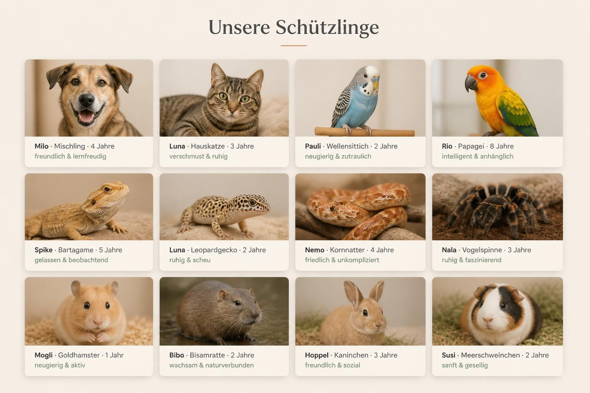
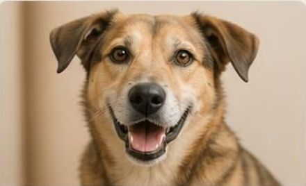
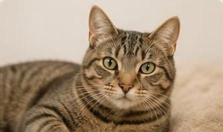
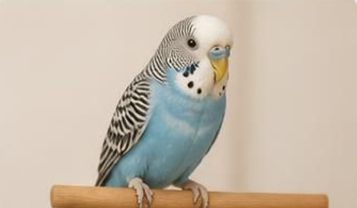
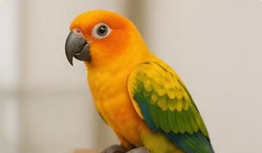
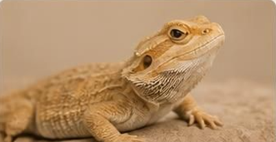
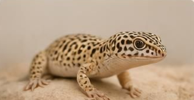
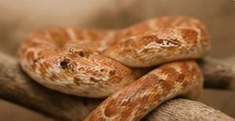
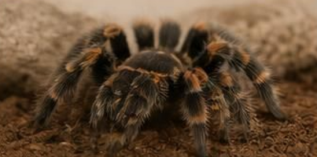

Wichtig:
Tiere werden nur an ein geeignetes und von einem Pfleger geprüften Zuhause abgegeben.

Tiere werden nur an ein geeignetes und von einem Pfleger geprüften Zuhause abgegeben.
Alter:4 Tierart:Mischling

Ein lebensfroher Begleiter, der immer bereit ist, etwas Neues zu lernen und gute Laune zu verbreiten.
Alter:4 Tierart:Hauskatze

Die perfekte Partnerin für gemütliche Stunden – Luna liebt Ruhe und ausgiebige Streicheleinheiten.
Alter:4 Tierart:Wellensittich

Ein kleiner Entdecker mit großem Herzen, der gerne die Welt erkundet und schnell Vertrauen fasst.
Alter:4 Tierart:Papagei

Ein schlauer Kopf mit einer loyalen Seite, der eine enge Bindung zu seinen Menschen aufbaut.
Alter:5 Tierart:Bartagame

Ein entspannter Zeitgenosse, der die Umgebung gerne ruhig analysiert und die Sonne genießt.
Alter:2 Tierart:Leopardgecko

Eine sanfte Seele, die Zeit braucht, um aufzutauen, dann aber durch ihre stille Art besticht.
Alter:4 Tierart:Kornnatter

Ein sanftmütiges Tier, das mit seiner stressfreien Art überzeugt und eine echte Bereicherung ist.
Alter:3 Tierart:Vogelspinne

Ein beeindruckendes Wesen, das durch seine ruhige Präsenz und seine besondere Optik begeistert.